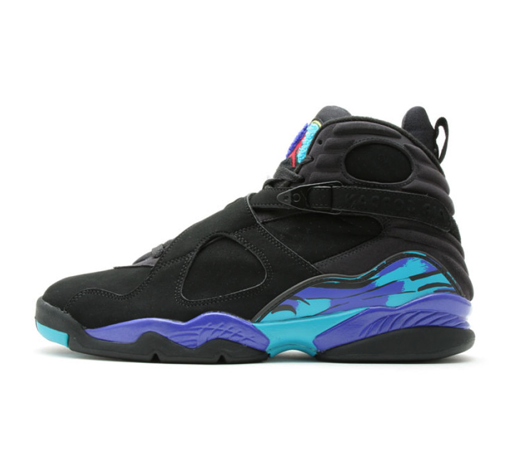

The Air Jordan III was designed by Tinker Hatfield who works for Nike as a designer for stores and offices. By that time Michael Jordan was ready to leave Nike, but the Jordan III changed his mind. It was the first Air Jordan to feature a visible air unit on the heel, the new Jumpman logo, an elephant print trim and tumble leather to give it a luxury look. These were the first Jordan's to feature the "NIKE AIR" logo on the back, but later replaced by the Jumpman logo, with the words "AIR" underneath it, similar to the Air Jordan VI. These were said to be Michael Jordan's favorite shoes, he wore them during the 1988 Dunk Championship and many other events in his basketball career.
In 1989 The Jordan IV shoe was released into the public, designed by Tinker Hatfield. It was the first Jordan shoe released on the global market. It had 4 colorways: White/ Black-Cement Grey, Black/Cement Grey, White/Fire Red-Black, and Off White/Military Blue. Spike Lee, the director and actor helped in the ads for Jordan IV. Spike Lee had featured the Air Jordan IV in his movie Do The Right Thing. The Air Jordan IV were on Jordan's feet when he made "The Shot" in Game 5 of the 1989 NBA First Round between the Chicago Bulls and the Cleveland Cavaliers.
The Air Jordan V was released in February 1990, designed by Tinker Hatfield again. Some elements were carried over from the Air Jordan IV, but overall they were a completely new look. Some of its new features were a reflective tongue, translucent rubber soles and lace locks. The soles gave them a new look, but it yellowed over time when exposed to moisture and were the source of many complaints early on due to the slippery nature of the soles when collecting dust. Hatfield is believed to have drawn inspiration for the Air Jordan V from World War II fighter planes, which was most notably visible in the shark teeth shapes on the midsole.
The Air Jordan VI had a new design by Tinker Hatfield and released in 1991. The Air Jordan VI introduced a reinforcement around the toe, It had two holes in the tongue, and a molded heel tab on the back of the sneaker. Like the Air Jordan V, this sneaker also had Clear rubber "Icy" Soles. Later that year the Bulls defeated the Lakers in the 1991 NBA Finals, with Jordan (wearing the Black Infrared) named as the most valuable player. That was also the first NBA Championship won by Jordan and the Bulls. In addition to a Porsche-inspired rear pull tab and visible air the Air Jordan VI was the first Jordan with an inner bootie.
The Air Jordan VII was released in 1992 with a new design by Tinker Hatfield. This shoe introduced the huarache technology which allowed the shoes to better conform to the user's foot. This was the first Air-Jordan in the line that did not have any distinctive "Nike Air" on the outer portions of the shoe. The VII was also known for a successful ad campaign in which Bugs Bunny appeared alongside Michael Jordan to market the shoes. When Jordan went to compete at the 1992 Barcelona Olympics to play for the US Men's Basketball Team.
The Air Jordan VIII was released to coincide with the 1992–1993 NBA season. The eighth model of the Air Jordan was noticeably heavier than its predecessors. This shoe had a lot more detail than most of the earlier Air Jordan's such as two crossover straps on each shoe and a Jumpman. Thus the Air Jordan VIII model became known as the "Punisher" because of the advanced basketball ankle support and enhanced traction. This shoe contains a full length air sole, polyurethane midsole, polycarbonate shank plate, and two crossover straps for added support and more custom fit.
Originally released in November 1993, the Air Jordan IX model was the first model released after Michael Jordan's retirement. Jordan never played a full season of NBA Basketball wearing these shoes. This model was inspired by baseball cleats that Jordan wore when playing minor-league baseball. The Air Jordan IX featured an inner sock sleeve and nubuck accents. The Air Jordan IX has been the shoe chosen to adorn Jordan's feet for his statue outside of the United Center in Chicago. Tupac Shakur also wore Air Jordans in a popular "Thug Life" photo set in 1993.
This was released in 1995 for representing five teams: Chicago Bulls, Orlando Magic, New York Knicks, Seattle SuperSonics, and Sacramento Kings. It was the first Air Jordan to feature a lightweight phylon midsole. The shoe also featured all of Michael Jordan's accomplishments on the outsole of the shoe. The lacing and tongue are completely black, and the red inner lining contrasts with the red inserts on the outsole. The outsole's design features a striped (wavy) design, which list many of Jordan's accomplishments.
This model was designed by Tinker Hatfield. When the shoe launched, Michael Jordan (retired from basketball by then) was trying in minor baseball leagues. Hatfield designed the sneaker waiting for Jordan to come back and hoping he would play in them. The highlight of the shoe is the patent leather mudguard. Patent leather was lightweight, and also tended not to stretch as much – a property to help keep the foot within the bounds of the shoe bed during direction changes on the court. The patent leather gave the XI a "formal" look. When this shoe released, some wore this model with business suits instead of dress shoes.
The Air Jordan XII was inspired by Nisshoki (the Japanese flag), and a 19th-century women dress boot. However, featuring gold-plated steel lace loops, embossed lizard skin pattern and a full length zoom air unit with a carbon fiber shank plate, this model set a new direction in style and technology in shoe design. Though not as light weight as previous models, the construction and firmness of the shoe is widely considered to be the most durable and sturdy shoes from the Air Jordan line.
In 1997, Air Jordan XIII's were released to the public. This model was known for its cushioning along the feet, designed by Hatfield. The Black Panther was the inspiration for the Air Jordan XIII, the sole resembles the pads on a panther's paw. But also the panther is the hologram on the back of the shoe which imitates a panther's eyes in the dark when light is shined at them. They were re-released in 2005, which coincided with the release of the Air Jordan 8s shoe.
Inspired by the Ferrari 550M which Michael Jordan owned, the Air Jordan XIV was originally released from 1998 to 1999. The Air Jordan XIV co-styled by the famous Tinker Hatfield and Mark Smith was made race ready and equipped with the Jordan Jumpman insignia on a Ferrari shaped badge. In addition, these shoes include breathable air ducts on the outer sole. The color scheme of predominant black accentuated with red was nicknamed "The Last Shot" because Michael Jordan wore them as he hit the game winning shot over Bryon Russell, in his final game with the Chicago Bulls in the 1998 NBA Finals.
The Air Jordan XV was released in 1999–2000. Reggie Miller wore it during the 2000 NBA Finals. This was the first shoe after Jordan's retirement. The design of the XV originated from the aircraft prototype X-15, which was developed by NASA during the 1950s. The sides of the XV were made from woven kevlar fibre. The Jordan XV is one of the least well-received Jordans. After Hatfield designed this model, he stoped designing Air Jordan for a while.